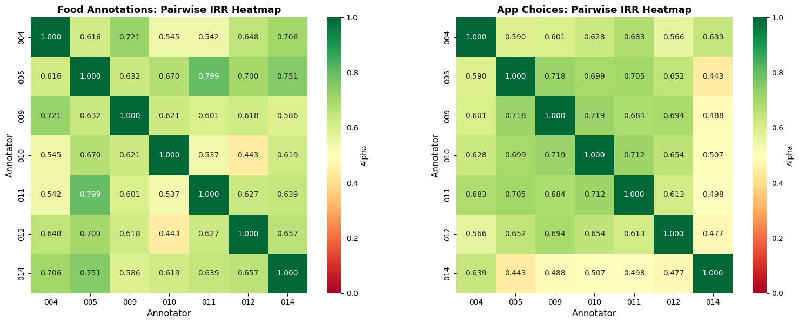
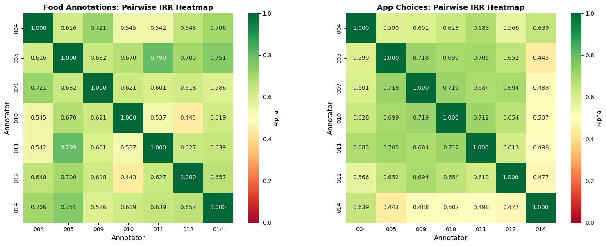

Exploring Holistic Human-Centered Empirical Methods
Case Studies in Multimodal Research
卓牧融 | Mu-Jung ‘MJ’ Cho ![]()
RCHSS, Academia Sinica
2025-11-24
Challenges in Capturing Digital Trace Data
Screens as Digital Trace Data (DTD)
- DTD: “records of activity (trace data) undertaken through an online information system (thus, digital).” (Howison et al., 2011).
- Screens vs. Platform APIs & data donation:
- Platform-specific vs. user-specific (Ohme et al., 2024).
- Capture a broader spectrum of interactions.
- Multimodality: images, text, interface elements, mixed content.
- Flexible unit of analysis (screen, session, episode).
- Ease of passive data collection.

The Stanford Human Screenome Project
Screenome: Capturing Real-World Interactions
- Captures smartphone screens every 5 seconds (or less).
- ~500 million screens from over 1,000 people for up to 1 year.
- Privacy, risk, and data security considerations.
- Linkage to periodic surveys (health data).
 Reeves et al. (2020). Nature; Reeves et al. (2020). Human–Computer Interaction.
Reeves et al. (2020). Nature; Reeves et al. (2020). Human–Computer Interaction.
Expanding on the Screenome Approach
Transition to Screenomics 3.0
- Screenome 1.0 – Research infrastructure & conventional ML-based measurements.
- Screenome 2.0 – Deep learning-based content analysis.
- Screenomics 3.0 – Multimodal encoders and large multimodal models (LMMs).
 Cho et al. (in prep.).
Cho et al. (in prep.).
ML-Based Content Analysis & Mixed Methods
Media Sequencing and Family Dynamics
- Homeostatic mechanism of media sequencing in everyday life.
- Young adults’ smartphone interactions with family.
- ML-based content analysis combined with qualitative interviews and diary methods.
- Focus on how digital interactions sequenced with offline interactions shape family dynamics.
 Cho et al. (2023). Heliyon.
Cho et al. (2023). Heliyon.  Sun et al. (2023). Journal of Social and Personal Relationships.
Sun et al. (2023). Journal of Social and Personal Relationships.
ML-Based Content Analysis & Mixed Methods
Mental Health via Screenome
- Linking survey measures with digital trace data (DTD):
- Depression, State Anxiety, ADHD, Happiness.
- Integrating self-report scales with DTD.
- Real-time, personalized detection of mental health states.
- Complementing clinical and survey indicators.
- Depression, State Anxiety, ADHD, Happiness.
 Cerit et al. (2025). JMIR Formative Research.
Cerit et al. (2025). JMIR Formative Research.
Deep Learning-Based Content Analysis
Visual Emotions, Scene Recognition, Food Detection
- CNN-based scene recognition to categorize environments.
- CNN-based food detection for identifying food-related content.
- Visual emotion recognition (valence and arousal) from screen images.
- Weekly trends: link visual emotion trajectories to well-being.


Multimodal Encoders and LMMs
Adolescents’ Food-Related Content Exposure
- 20 adolescents, 1-week observation of smartphone screens.
- 3% of all exposure is food-related; 0.6% branded.
- Demonstrates how a specific content category can be mined from large screen sets.
- Shows feasibility of longitudinal content tracking at screen level.
 Cho et al. (in prep.).
Cho et al. (in prep.).
Multimodal Encoders and LMMs
Spatial + Behavioral Clusters with CLIP & OCR
- Screenotype: unique screenomes associated with behaviors and experiences.
- Used HDBSCAN + UMAP on 320K data points for cluster analysis.
- 26 distinct clusters; ~19% non-noise.
- Within-app CLIP variance > between-app variance → rich within-app heterogeneity.
 Cho et al. (in prep.).
Cho et al. (in prep.).
Multimodal Encoders and LMMs
Mapping Digital Screen Content
- Media Content Atlas for open-ended exploration of digital media interactions.
- Content mapping with HDBSCAN + UMAP on 1.12M data points from 112 participants.
- Supports hypothesis generation about media repertoires and use patterns.
 Cerit et al. (2025). CHI EA.
Cerit et al. (2025). CHI EA.
Multimodal Encoders and LMMs
Mapping Digital Screen Content
- Image + text embeddings combined.
- Large multimodal model (LMM) descriptions.
- Large multimodal model (LMM) descriptions.
- Topic label generation for clusters of screens.
- Information retrieval: querying screens and descriptions for:
- Content categories.
- usage contexts, etc.
 Cerit et al. (2025). CHI EA.
Cerit et al. (2025). CHI EA.
Screenomics 3.0 Architecture
Overall Pipeline
- Screenomes: longitudinal smartphone screenshots.
- Image Encoder (CLIP, EVA-CLIP, e5-V) → image embeddings.
- OCR Engine (e.g., CRAFT + STR) → text from screens.
- Text Encoder (MiniLM, distilRoBERTa) → document embeddings.
- Task-specific labels with LMM + PEFT (Gemma 3 + LoRA).
- Users provide human labels; high-power LMMs supply synthetic labels.
 Cho et al. (in prep.).
Cho et al. (in prep.).
Screenomics 3.0 Architecture
Image Encoder: CLIP
- CLIP (Contrastive Language–Image Pre-training).
- Jointly learns image–text representations.
- Surpasses many fully supervised baselines on zero-shot tasks.
- Core to many state-of-the-art multimodal architectures.
 Radford et al. (2021).
Radford et al. (2021).
Screenomics 3.0 Architecture
Image Encoder: EVA-CLIP
- EVA (Explore the limits of Visual representation at scAle).
- Pretrains ViTs using masked image modeling (MIM).
- Helps ViTs learn fine-grained image structure before contrastive learning.
- Pretrains ViTs using masked image modeling (MIM).
- EVA-02-CLIP: outperforms similar-sized models on many tasks, including image retrieval.
 Fang et al. (2023).
Fang et al. (2023).
Screenomics 3.0 Architecture
Text-to-Image Retrieval with CLIP
- Compute cosine similarity between text queries and image embeddings.
- Efficiently find relevant (and irrelevant) images.
- Supports rapid creation of balanced labeled datasets.
- Enables exploratory analyses of usage contexts and media patterns.

Screenomics 3.0 Architecture
Human Labels with Label Studio
- Label Studio for customized labeling interfaces across projects.
- Supports multiple annotation tasks (e.g., food presence, valence, task type).
- Reliability is a key challenge:
- need for consistent instructions,
- quality control and adjudication.
- need for consistent instructions,
 

Screenomics 3.0 Architecture
Task-Specific Labels with Large Multimodal Models
- LLaVA (Large Language and Vision Assistant): open-source LMM.
- Use cases in this project:
- VQA over smartphone screens,
- PEFT for task-specific labeling,
- Large-N inference over millions of screens.
- VQA over smartphone screens,
- Competitive families of models:
- Gemma 3 (12B, 8-bit quantization).
- Qwen2.5-VL (7B, bf16).
- Llama 3.2-V (11B, 8-bit, split across GPUs).
- Gemma 3 (12B, 8-bit quantization).
 Liu et al. (2023).
Liu et al. (2023).
Screenomics 3.0 Architecture
PEFT with LoRA
- LoRA (Low-Rank Adaptation of Large Language Models).
- Replace full-rank weight matrix W (d × d) with low-rank A (d × r) and B (r × d).
- Freeze W, train only B · A.
- Replace full-rank weight matrix W (d × d) with low-rank A (d × r) and B (r × d).
- Makes large-model fine-tuning feasible on modest hardware.
- Pretraining → SFT (supervised fine-tuning) → RLHF.
- Reduces trainable parameters and memory footprint substantially.
- Pretraining → SFT (supervised fine-tuning) → RLHF.
- Example performance (food-detection use case):
- Accuracy ≈ .96, macro F1 ≈ .93, Kappa ≈ .85.
 Hu et al. (2021).
Hu et al. (2021).
Multimodal Encoders and LMMs
High-Level Behavioral Constructs
- LMM-based user activity and intention measurement:
- Combine commercial solutions with prompt engineering.
- Measure high-level behavioral constructs (e.g., consuming media, functional activities).
- In one application, Krippendorff’s Alpha = 0.877, precision = 0.92, recall = 0.91.
- Context-based inference: identifying user intention behind each screen.
- Combine commercial solutions with prompt engineering.
 Chang et al. (under review).
Chang et al. (under review).
A Framework for Analyzing and Linking Multimodal Social Media Content
- MJ Cho, Chingching Chang, Yuan Hsiao, Hen-Hsen Huang
- RCHSS, Academia Sinica

The Challenge: A New Era for Media Effects Research
Why We Need New Approaches
- The field is shifting from quantity of media use to content and its effects (Pouwels et al., 2024).
- Nature Research Intelligence: Multimodal communication as a frontier.
- Traditional methods are insufficient for personalized and fragmented media environments (Ohme et al., 2024; Otto et al., 2024).
- The video problem:
- Dominant form of social media content.
- Multimodal and challenging to study (Kroon et al., 2024).
- Audio channel remains an under-studied dimension of communication.
- Dominant form of social media content.

研究團隊與背景
- 人社中心跨領域團隊：卓牧融、張卿卿、蕭遠、黃瀚萱、張永儒
- 目標：提升社會議題理解、促進公共理性對話
- 基礎：台灣規模最大的網路輿情資料庫